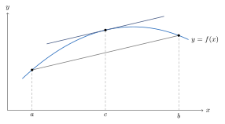

Chapter 7. The Derivative
The derivative is the first new idea built from the limits of Chapter 6. It is a limit of difference quotients. Section 7.1 proves the rules from calculus, including the Chain Rule. Section 7.2 proves the Mean Value Theorem. It is the most important result in the chapter, because it turns information about \(f'\) into information about \(f\). Almost everything after it, here and in later chapters, depends on it.
Sections 7.3 and 7.4 are marked with a star. They can be skipped. Nothing later in the book depends on them.
Examples and exercises use the derivatives of \(\sin x\), \(\cos x\), \(\ln x\) and \(e^x\) from calculus. As in Remark 3.1.1, these are assumed for now. They are proved in the starred Sections 9.4, 9.5, 12.4 and 12.5.
7.1 Properties of the Derivative
Definition 7.1.1. Let \(I\subset\mathbb{R}\) be an interval and \(f:I\to\mathbb{R}\). For \(c\in I\), the derivative of \(f\) at \(c\), denoted \(f'(c)\), is \[f'(c)=\lim_{x\to c}\frac{f(x)-f(c)}{x-c},\] provided the limit exists. If \(f'(c)\) exists, \(f\) is differentiable at \(c\). If \(f\) is differentiable at every point of \(I\), then \(f\) is differentiable on \(I\), and \(f'\) is the function \(c\mapsto f'(c)\) on \(I\). If \(f'\) is differentiable at \(c\), its derivative is the second derivative \(f''(c)\). In general, \(f^{(0)}=f\), and \(f^{(n)}=\bigl(f^{(n-1)}\bigr)'\) is the \(n\)th derivative when it exists. The derivative is also written \(\frac{d}{dx}f(x)\).
The difference quotient \(\frac{f(x)-f(c)}{x-c}\) is a function of \(x\) on \(I\setminus\{c\}\). The limit makes sense because \(c\) is a limit point of \(I\setminus\{c\}\). This uses that \(I\) is an interval with more than one point.
Remark 7.1.2. If \(c\in I^\circ\), there exists an \(r>0\) such that \((c-r,c+r)\subset I\). Set \(x=c+h\) with \(0<|h|<r\). Then \[f'(c)=\lim_{h\to0}\frac{f(c+h)-f(c)}{h},\] provided the limit exists.
If \(c\in I\) is a left endpoint, then \[f'(c)=\lim_{h\to 0^+}\frac{f(c+h)-f(c)}{h},\] provided the limit exists.
If \(c\in I\) is a right endpoint, then \[f'(c)=\lim_{h\to 0^-}\frac{f(c+h)-f(c)}{h},\] provided the limit exists.
Theorem 7.1.3. Let \(I\subset\mathbb{R}\) be an interval, \(f:I\to\mathbb{R}\), and \(c\in I\). If \(f\) is differentiable at \(c\), then \(f\) is continuous at \(c\).
Proof. For \(x\ne c\), \(x\in I\), \[f(x)-f(c)=\left(\frac{f(x)-f(c)}{x-c}\right)(x-c).\] Since \(f'(c)\) exists, by Theorem 6.1.13 (2), \[\lim_{x\to c}(f(x)-f(c))=\lim_{x\to c}\left(\frac{f(x)-f(c)}{x-c}\right)(x-c)=f'(c)\cdot 0=0.\] So \(\lim_{x\to c}f(x)=f(c)\) and \(f\) is continuous at \(c\) (relative to \(I\), as in Remark 6.3.7).
∎
The converse is false. The function \(f(x)=|x|\) is continuous at \(0\) but not differentiable there. See Exercise 7.1.4.
Definition 7.1.4. Let \(I\subset\mathbb{R}\) be an interval. A function \(f:I\to\mathbb{R}\) is continuously differentiable on \(I\) if \(f\) is differentiable on \(I\) and \(f'\in C(I)\). The set of such functions is denoted \(C^{(1)}(I)\). More generally, for \(n\in\mathbb{N}\), \(C^{(n)}(I)\) is the set of \(f:I\to\mathbb{R}\) such that \(f^{(n)}\) exists on \(I\) and \(f^{(n)}\in C(I)\). Write \(C^{(n)}[a,b]\) for \(C^{(n)}([a,b])\).
By Theorem 7.1.3, \(C^{(1)}(I)\subset C(I)\). A differentiable function need not be in \(C^{(1)}(I)\). See Exercise 7.1.5.
Theorem 7.1.5. Let \(I\subset\mathbb{R}\) be an interval and \(f,g:I\to\mathbb{R}\). If \(f\) and \(g\) are differentiable at \(c\in I\), then \(f+g\), \(fg\), and \(f/g\) (if \(g(c)\ne 0\)) are differentiable at \(c\) and
\((f+g)'(c)=f'(c)+g'(c)\);
\((fg)'(c)=f'(c)g(c)+f(c)g'(c)\); and
\((f/g)'(c)=\frac{f'(c)g(c)-f(c)g'(c)}{[g(c)]^2}\).
Proof.
This part is an exercise.
By adding and subtracting \(f(c+h)g(c)\), \(h\ne 0\), \[\frac{(fg)(c+h)-(fg)(c)}{h}=f(c+h)\left(\frac{g(c+h)-g(c)}{h}\right) + \left(\frac{f(c+h)-f(c)}{h}\right)g(c).\] So \[\begin{aligned} (fg)'(c)&=\lim_{h\to 0}\frac{(fg)(c+h)-(fg)(c)}{h}\\ &=\lim_{h\to0}\left[f(c+h)\left(\frac{g(c+h)-g(c)}{h}\right) + \left(\frac{f(c+h)-f(c)}{h}\right)g(c)\right]\\ &=f(c)g'(c)+f'(c)g(c). \end{aligned}\] The last step uses \(f(c+h)\to f(c)\) as \(h\to0\), since \(f\) is continuous at \(c\) by Theorem 7.1.3.
First, consider \((1/g)'(c)\). Since \(g(c)\ne0\) and \(g\) is continuous at \(c\), there exists a \(\delta>0\) such that for all \(h\) with \(|h|<\delta\) and \(c+h\in I\), \(g(c+h)\ne 0\) by Lemma 6.1.11. Thus, for \(0<|h|<\delta\) with \(c+h\in I\), \[\frac{\frac{1}{g(c+h)}-\frac{1}{g(c)}}{h}=\frac{-(g(c+h)-g(c))}{h}\left(\frac{1}{g(c)g(c+h)}\right).\] So \[\begin{aligned} \left(\frac{1}{g}\right)'(c)&=\lim_{h\to0}\frac{\frac{1}{g(c+h)}-\frac{1}{g(c)}}{h}\\ &=\lim_{h\to0}\frac{-(g(c+h)-g(c))}{h}\left(\frac{1}{g(c)g(c+h)}\right)\\ &=-g'(c)\cdot\frac{1}{[g(c)]^2}. \end{aligned}\] Now apply the product rule to obtain \[\begin{aligned} \left(\frac{f}{g}\right)'(c)&=\left(f\cdot\frac{1}{g}\right)'(c)\\ &=f'(c)\cdot\frac{1}{g(c)}+f(c)\cdot\frac{-g'(c)}{[g(c)]^2}\\ &=\frac{f'(c)g(c)-f(c)g'(c)}{[g(c)]^2}. \end{aligned}\]
∎
Proof Technique (Avoiding Division by Zero).
A tempting proof of the Chain Rule writes \[\frac{g(f(t))-g(f(c))}{t-c}=\frac{g(f(t))-g(f(c))}{f(t)-f(c)}\cdot\frac{f(t)-f(c)}{t-c}\] and takes limits. This fails if \(f(t)=f(c)\) for \(t\) arbitrarily close to \(c\), since then the first fraction is \(0/0\). For example, with \(c=0\), \(f(t)=t^2\sin\frac1t\) (and \(f(0)=0\)) has \(f(t)=0\) at \(t=\frac{1}{n\pi}\) for every \(n\in\mathbb{N}\). The proof below avoids the division. It writes each difference as a product, \(f(t)-f(c)=(t-c)\bigl(f'(c)+u(t)\bigr)\), where \(u(t)\to0\). Products can be substituted into each other without dividing by anything. Whenever a proof divides, check that the denominator cannot be \(0\).
Theorem 7.1.6 (Chain Rule).
Let \(I,J\subset\mathbb{R}\) be intervals, \(f:I\to\mathbb{R}\) with \(f[I]\subset J\), and \(g:J\to\mathbb{R}\). If \(f\) is differentiable at \(c\in I\) and \(g\) is differentiable at \(f(c)\in J\), then \(g\circ f\) is differentiable at \(c\) and \[(g\circ f)'(c)=g'(f(c))f'(c).\]
Proof.
Let \(d=f(c)\). Define \(u:I\to\mathbb{R}\) and \(v:J\to\mathbb{R}\) by \[u(t)=\begin{cases}\frac{f(t)-f(c)}{t-c}-f'(c), & t\ne c,\\ 0, & t=c,\end{cases} \qquad v(s)=\begin{cases}\frac{g(s)-g(d)}{s-d}-g'(d), & s\ne d,\\ 0, & s=d.\end{cases}\] Since \(f'(c)\) and \(g'(d)\) exist, \(\lim_{t\to c}u(t)=0=u(c)\) and \(\lim_{s\to d}v(s)=0=v(d)\). So \(u\) is continuous at \(c\) and \(v\) is continuous at \(d\). For every \(t\in I\) and \(s\in J\), \[f(t)-f(c)=(t-c)\bigl(f'(c)+u(t)\bigr)\quad\text{and}\quad g(s)-g(d)=(s-d)\bigl(g'(d)+v(s)\bigr).\] Both sides of the first equation are \(0\) when \(t=c\), and both sides of the second are \(0\) when \(s=d\). Put \(s=f(t)\) in the second equation, and then use the first. This gives \[\begin{aligned} (g\circ f)(t)-(g\circ f)(c)&=\bigl(f(t)-f(c)\bigr)\bigl(g'(d)+v(f(t))\bigr)\\ &=(t-c)\bigl(f'(c)+u(t)\bigr)\bigl(g'(d)+v(f(t))\bigr). \end{aligned}\] So for \(t\in I\) with \(t\ne c\), \[\frac{(g\circ f)(t)-(g\circ f)(c)}{t-c}=\bigl(f'(c)+u(t)\bigr)\bigl(g'(d)+v(f(t))\bigr).\] By Theorem 7.1.3, \(f\) is continuous at \(c\). Since \(v\) is continuous at \(d=f(c)\), \(v\circ f\) is continuous at \(c\) by Theorem 6.3.4. So \(v(f(t))\to v(d)=0\) as \(t\to c\). Also \(u(t)\to0\). By Theorem 6.1.13, the right side converges to \(f'(c)g'(d)\) as \(t\to c\). Thus \[(g\circ f)'(c)=g'(d)f'(c)=g'(f(c))f'(c).\]
∎
Definition 7.1.7. Let \(S\subset\mathbb{R}\) and \(f:S\to\mathbb{R}\).
\(f\) has a relative maximum at a point \(c\in S\) if there exists a \(\delta>0\) such that \(f(x)\le f(c)\) for all \(x\in S\) with \(|x-c|<\delta\).
\(f\) has a relative minimum at a point \(c\in S\) if there exists a \(\delta>0\) such that \(f(x)\ge f(c)\) for all \(x\in S\) with \(|x-c|<\delta\).
\(f\) has an absolute maximum at \(c\in S\) if \(f(x)\le f(c)\) for all \(x\in S\).
\(f\) has an absolute minimum at \(c\in S\) if \(f(x)\ge f(c)\) for all \(x\in S\).
\(f\) has a relative extremum at \(c\in S\) if \(f\) has a relative maximum or minimum at \(c\).
\(f\) has an absolute extremum at \(c\in S\) if \(f\) has an absolute maximum or minimum at \(c\).
A relative maximum or minimum is also called a local maximum or minimum.
Theorem 7.1.8. Let \(I\subset\mathbb{R}\) be an interval and \(f:I\to\mathbb{R}\). Suppose \(f\) has a relative extremum at \(c\in I^\circ\). If \(f\) is differentiable at \(c\), then \(f'(c)=0\).
Proof. Assume without loss of generality that \(f\) has a local maximum at \(c\). (Otherwise, replace \(f\) by \(-f\).) Then there exists a \(\delta>0\) such that \(f(x)\le f(c)\) for all \(x\in I\) with \(|x-c|<\delta\). In particular, if \(c<x<c+\delta\), \(x\in I\), then \[\frac{f(x)-f(c)}{x-c}\le 0.\] Similarly if \(c-\delta<x<c\), \(x\in I\), then \[\frac{f(x)-f(c)}{x-c}\ge 0.\] Since \(f'(c)\) exists, \(\lim_{x\to c}\frac{f(x)-f(c)}{x-c}\) exists and \[0\ge \lim_{x\to c^+}\frac{f(x)-f(c)}{x-c}=\lim_{x\to c^-}\frac{f(x)-f(c)}{x-c}\ge 0,\] by Theorems 6.1.23 and 6.1.15. Here \(c\in I^\circ\) is used, so that both one-sided limits make sense. So \(\lim_{x\to c}\frac{f(x)-f(c)}{x-c}=0\). So \(f'(c)=0\).
∎
Corollary 7.1.9. Let \(f:[a,b]\to\mathbb{R}\) be continuous. If \(f\) has a relative extremum at \(c\in(a,b)\), then either \(f'(c)\) does not exist or \(f'(c)=0\).
Exercises
Exercise 7.1.1. Prove Theorem 7.1.5 (1).
Exercise 7.1.2. Prove \(\frac{d}{dx}x^n=nx^{n-1}\) for all \(n\in\mathbb{N}_0\). [Hint]
Exercise 7.1.3. Prove \(\frac{d}{dx}x^n=nx^{n-1}\) for all \(n\in\mathbb{Z}\) and \(x\ne0\). [Hint]
Exercise 7.1.4. Prove that \(f:\mathbb{R}\to\mathbb{R}\), \(f(x)=|x|\), is not differentiable at \(0\). [Solution]
Exercise 7.1.5. Define \(f:\mathbb{R}\to\mathbb{R}\) by \(f(x)=x^2\sin\frac1x\) for \(x\ne0\) and \(f(0)=0\). Prove that \(f\) is differentiable on \(\mathbb{R}\) with \(f'(0)=0\), and that \(f'\) is not continuous at \(0\). [Hint]
7.2 The Mean Value Theorem
The Mean Value Theorem says that somewhere between \(a\) and \(b\), the tangent line to the graph of \(f\) is parallel to the secant line through \((a,f(a))\) and \((b,f(b))\). See Figure 7.1. Rolle’s Theorem is the special case where the secant line is horizontal.

Theorem 7.2.1 (Rolle’s Theorem).
Let \(f:[a,b]\to\mathbb{R}\) be continuous on \([a,b]\) and differentiable on \((a,b)\), with \(f(a)=f(b)\). Then there exists a \(c\in(a,b)\) such that \(f'(c)=0\).
Proof. If \(f\) is constant on \([a,b]\), then \(f'(x)=0\) for all \(x\in(a,b)\).
Now assume \(f\) is not constant. By the Extreme Value Theorem (Theorem 6.3.15), \(f\) has a maximum and a minimum on \([a,b]\). Choose some \(t\in(a,b)\) such that \(f(t)\ne f(a)\). If \(f(t)>f(a)\), then \(f\) has a maximum at some \(c\in(a,b)\). The maximum value is at least \(f(t)>f(a)=f(b)\), so it is not attained at \(a\) or \(b\). An absolute maximum at \(c\in(a,b)\) is also a relative maximum. Thus, by Theorem 7.1.8, \(f'(c)=0\). If \(f(t)<f(a)\), then \(f\) has a local minimum at some \(c\in(a,b)\). Thus \(f'(c)=0\).
∎
Example 7.2.2. Continuity in Rolle’s Theorem is required. Consider \(f:[0,1]\to\mathbb{R}\) defined by \[f(x)=\begin{cases} x, & 0\le x<1, \\ 0, & x=1.\end{cases}\] \(f\) is differentiable on \((0,1)\) and \(f(0)=f(1)\), but \(f'(x)\ne 0\) for all \(x\in (0,1)\).
Example 7.2.3. Differentiability at the endpoints in Rolle’s Theorem is not required. Consider \(f:[-2,2]\to\mathbb{R}\), \(f(x)=\sqrt{4-x^2}\). Then \(f(-2)=0=f(2)\), and \(f'(x)=\frac{-x}{\sqrt{4-x^2}}\) does not exist at \(-2\) and \(2\). But \(f'(0)=0\).
Theorem 7.2.4 (Mean Value Theorem).
Let \(f:[a,b]\to\mathbb{R}\) be continuous on \([a,b]\) and differentiable on \((a,b)\). Then there exists a \(c\in(a,b)\) such that \[f(b)-f(a)=f'(c)(b-a).\]
Proof. Define the function \(g:[a,b]\to\mathbb{R}\) by \[g(x)=f(x)-f(a)-\left[\frac{f(b)-f(a)}{b-a}\right](x-a).\] Then \(g\) is continuous on \([a,b]\), differentiable on \((a,b)\), and \(g(a)=g(b)\). Thus, by Rolle’s Theorem, there exists a \(c\in(a,b)\) such that \(g'(c)=0\). But \[g'(x)=f'(x)-\frac{f(b)-f(a)}{b-a}\] for all \(x\in (a,b)\). So \[g'(c)=f'(c)-\frac{f(b)-f(a)}{b-a}=0.\] Thus \(f'(c)=\frac{f(b)-f(a)}{b-a}\). So \(f(b)-f(a)=f'(c)(b-a)\).
∎
Proof Technique (Auxiliary Functions).
The proof of the Mean Value Theorem does not work with \(f\) directly. It builds a new function \(g\) that satisfies the hypotheses of Rolle’s Theorem, applies Rolle’s Theorem to \(g\), and translates the answer back to \(f\). The function \(g\) is \(f\) minus the secant line, chosen so that \(g(a)=g(b)\). A function built for one proof like this is called an auxiliary function. Finding it is the creative step. The proofs of Theorems 7.2.6 and 7.2.8 use the same idea.
Example 7.2.5. The inequality \(\frac{x}{1+x}\le \ln(1+x)\le x\) holds for all \(x>-1\). To show this, assume \(\frac{d}{dx}\ln x=\frac{1}{x}\). Let \(f:(-1,\infty)\to\mathbb{R}\), \(f(x)=\ln(1+x)\). Then \(f(0)=0\). If \(x>0\), then by the Mean Value Theorem, there exists a \(c\in(0,x)\) such that \[\ln(1+x)=f(x)-f(0)=f'(c)x.\] But \(f'(c)=\frac{1}{1+c}\) and \(\frac{1}{1+x}<\frac{1}{1+c}<1\) for all \(c\in(0,x)\). Therefore, \(\frac{x}{1+x}<f'(c)x<x\). So \(\frac{x}{1+x}\le \ln(1+x)\le x\) for all \(x\ge 0\).
Now suppose \(-1<x<0\). Then again, by the Mean Value Theorem, there exists a \(c\in(x,0)\) such that \[\ln(1+x)=f(x)-f(0)=\frac{x}{1+c}.\] But since \(x<c<0\), \(1<\frac{1}{1+c}<\frac{1}{1+x}\), and since \(x<0\), \(\frac{x}{1+x}<\frac{x}{1+c}<x\). So \[\frac{x}{1+x}<\ln(1+x)<x\] for \(-1<x<0\).
Theorem 7.2.6 (Cauchy Mean Value Theorem).
Let \(f,g:[a,b]\to\mathbb{R}\) be continuous on \([a,b]\) and differentiable on \((a,b)\). Then there exists a \(c\in(a,b)\) such that \[[f(b)-f(a)]g'(c)=[g(b)-g(a)]f'(c).\]
Proof. Let \(h(x)=[f(b)-f(a)]g(x)-[g(b)-g(a)]f(x)\). Then \(h\) is continuous on \([a,b]\), differentiable on \((a,b)\), and \[h(a)=f(b)g(a)-f(a)g(b)=h(b).\] Thus by Rolle’s Theorem, there exists a \(c\in(a,b)\) such that \(h'(c)=0\). Therefore, \[[f(b)-f(a)]g'(c)-[g(b)-g(a)]f'(c)=0,\] which gives the result.
∎
Theorem 7.2.7. Let \(I\subset\mathbb{R}\) be an interval and \(f:I\to\mathbb{R}\) be differentiable on \(I\).
If \(f'(x)\ge 0\) for all \(x\in I\), then \(f\) is increasing on \(I\).
If \(f'(x)> 0\) for all \(x\in I\), then \(f\) is strictly increasing on \(I\).
If \(f'(x)\le 0\) for all \(x\in I\), then \(f\) is decreasing on \(I\).
If \(f'(x)<0\) for all \(x\in I\), then \(f\) is strictly decreasing on \(I\).
If \(f'(x)=0\) for all \(x\in I\), then \(f\) is constant on \(I\).
Proof. Suppose \(x_1,x_2\in I\) with \(x_1<x_2\). By the Mean Value Theorem, there exists a \(c\in(x_1,x_2)\) such that \[f(x_2)-f(x_1)=f'(c)(x_2-x_1).\] The results for (1)–(5) follow directly. For example, in (1), \(f'(c)\ge0\) and \(x_2-x_1>0\), so \(f(x_2)\ge f(x_1)\). The Mean Value Theorem applies on \([x_1,x_2]\) since \(f\) is continuous there by Theorem 7.1.3.
∎
Theorem 7.2.8 (Intermediate Value Theorem for Derivatives).
Let \(I\subset \mathbb{R}\) be an interval and \(f:I\to\mathbb{R}\) be differentiable on \(I\). Then, given \(a,b\in I\) with \(a<b\) and a real number \(k\) between \(f'(a)\) and \(f'(b)\), there exists a \(c\in(a,b)\) such that \(f'(c)=k\).
Proof. Define \(g:I\to\mathbb{R}\) by \(g(x)=f(x)-k x\). Then \(g\) is differentiable on \(I\) with \(g'(x)=f'(x)-k\).
Assume without loss of generality that \(f'(a)<k<f'(b)\). Then \(g'(a)<0\) and \(g'(b)>0\). Since \(g'(a)<0\), there exists an \(x_1\in(a,b)\) such that \(g(x_1)<g(a)\). Indeed, by Lemma 6.1.11 there exists a \(\delta>0\) such that \(\frac{g(x)-g(a)}{x-a}<0\) for all \(x\in I\) with \(0<|x-a|<\delta\). Any \(x_1\in(a,b)\) with \(x_1<a+\delta\) works. Also, since \(g'(b)>0\), there exists an \(x_2\in(a,b)\) such that \(g(x_2)<g(b)\). So \(g\) has an absolute minimum at some point \(c\in(a,b)\). By the Extreme Value Theorem, \(g\) has an absolute minimum on \([a,b]\) at some \(c\). It is not at \(a\), since \(g(x_1)<g(a)\), and not at \(b\), since \(g(x_2)<g(b)\). By Theorem 7.1.8, \(g'(c)=f'(c)-k=0\). So \(f'(c)=k\).
∎
This result is also called Darboux’s Theorem. A derivative does not have to be continuous (Exercise 7.1.5). Even so, it has the intermediate value property, just like a continuous function. One consequence is that a derivative cannot have a jump. See Exercise 7.2.8.
Theorem 7.2.9 (Inverse Function Theorem).
Let \(I\subset \mathbb{R}\) be an interval and \(f:I\to\mathbb{R}\) be differentiable on \(I\) with \(f'(x)\ne 0\) for all \(x\in I\). Then \(f\) is one-to-one on \(I\) and the inverse function \(f^{-1}\) is continuous and differentiable on \(J=f[I]\) with \[(f^{-1})'(f(c))=\frac{1}{f'(c)}\] for all \(c\in I\).
Proof. Since \(f'(x)\ne 0\) for all \(x\in I\), by Theorem 7.2.8, \(f'\) is either always positive or always negative on all of \(I\). Assume without loss of generality that \(f'(x)>0\) for all \(x\in I\). Then by Theorem 7.2.7, \(f\) is strictly increasing on \(I\), and by Theorem 6.5.7, \(f^{-1}\) is continuous on \(J=f[I]\).
Let \(d\in J\) and let \(\{y_n\}\) be a sequence in \(J\) with \(y_n\to d\), \(y_n\ne d\) for all \(n\in\mathbb{N}\). For each \(n\in\mathbb{N}\), there exists an \(x_n\in I\) with \(f(x_n)=y_n\). Since \(f^{-1}\) is continuous, \(x_n\to c=f^{-1}(d)\). Since \(f^{-1}\) is one-to-one, \(x_n\ne c\) for all \(n\). So \(\frac{f(x_n)-f(c)}{x_n-c}\to f'(c)\ne0\) by Theorem 6.1.18. Hence \[\lim_{n\to\infty}\frac{f^{-1}(y_n)-f^{-1}(d)}{y_n-d}=\lim_{n\to\infty}\frac{x_n-c}{f(x_n)-f(c)}=\frac{1}{f'(c)}.\] Since this holds for any sequence \(\{y_n\}\) in \(J\) such that \(y_n\to d\), \(y_n\ne d\) for all \(n\in\mathbb{N}\), by Theorem 6.1.18, \[(f^{-1})'(d)=\lim_{y\to d}\frac{f^{-1}(y)-f^{-1}(d)}{y-d}=\frac{1}{f'(c)}.\]
∎
Example 7.2.10. Let \(f:[0,\pi]\to\mathbb{R}\), \(f(x)=\cos x\). Since \(f'(x)=-\sin x<0\) for all \(x\in(0,\pi)\), \(f(x)=\cos x\) is strictly decreasing on \([0,\pi]\). Also, \(f[[0,\pi]]=[-1,1]\) and so \(f^{-1}(y)=\arccos y\) exists on \([-1,1]\). Since \(f'(0)=f'(\pi)=0\), apply Theorem 7.2.9 on \(I=(0,\pi)\), where \(J=(-1,1)\). For \(x\in(0,\pi)\), \(\sin x>0\), so \(\sin x=\sqrt{1-\cos^2x}\). Now \[(f^{-1})'(f(x))=\frac{1}{f'(x)}=\frac{1}{-\sin x}=\frac{-1}{\sqrt{1-\cos^2x}}=\frac{-1}{\sqrt{1-[f(x)]^2}}.\] So \[(f^{-1})'(y)=\frac{-1}{\sqrt{1-y^2}}\] for \(y\in(-1,1)\).
Exercises
Exercise 7.2.1. Use the Mean Value Theorem to establish the inequality \(e^x\geq 1+x\). You may assume \(\frac{d}{dx}e^x=e^x\). [Hint]
Exercise 7.2.2. Suppose \(f:(a,b)\to\mathbb{R}\) satisfies \(|f(x)-f(y)|\leq M|x-y|^\alpha\) for some \(\alpha>1\) and for all \(x,y\in (a,b)\). Prove that \(f\) is a constant function on \((a,b)\). [Hint]
Exercise 7.2.3. (The First Derivative Test) Let \(f:[a,b]\to\mathbb{R}\) be differentiable on \((a,b)\). Suppose \(c\in (a,b)\) is such that \(f'(c)=0\).
If there exists a \(\delta>0\) such that \(f'(x)>0\) for all \(x\in(c-\delta,c)\) and \(f'(x)<0\) for all \(x\in(c,c+\delta)\), prove \(f\) has a local maximum at \(x=c\).
If there exists a \(\delta>0\) such that \(f'(x)<0\) for all \(x\in(c-\delta,c)\) and \(f'(x)>0\) for all \(x\in(c,c+\delta)\), prove \(f\) has a local minimum at \(x=c\).
Exercise 7.2.4. (The Second Derivative Test) Let \(f:[a,b]\to\mathbb{R}\) be differentiable on \((a,b)\). Suppose \(c\in (a,b)\) is such that \(f'(c)=0\), and \(f''(c)\) exists.
If \(f''(c)>0\), prove that \(f\) has a local minimum at \(c\).
If \(f''(c)<0\), prove that \(f\) has a local maximum at \(c\).
Show, using two specific examples, that no conclusion can be made if \(f''(c)=0\).
Exercise 7.2.5. Prove \(\frac{d}{dx}x^{1/n}=\frac{1}{n}x^{1/n - 1}\) for all \(x\in(0,\infty)\), \(n\in\mathbb{N}\). [Hint]
Exercise 7.2.6. Prove \(\frac{d}{dx}x^{m/n}=\frac{d}{dx}(x^{1/n})^m=\frac{m}{n}x^{m/n-1}\) for all \(x\in(0,\infty)\), \(m\in\mathbb{Z}\), \(n\in\mathbb{N}\).
Exercise 7.2.7. Let \(I\subset\mathbb{R}\) be an interval and \(f:I\to\mathbb{R}\) be differentiable on \(I\) with \(|f'(x)|\le M\) for all \(x\in I\). Prove that \(f\) is Lipschitz continuous on \(I\). Use this to show \(|\sin x-\sin y|\le|x-y|\) for all \(x,y\in\mathbb{R}\). [Solution]
Exercise 7.2.8. Define \(g:\mathbb{R}\to\mathbb{R}\) by \(g(x)=0\) for \(x<0\) and \(g(x)=1\) for \(x\ge0\). Prove that there is no differentiable function \(f:\mathbb{R}\to\mathbb{R}\) with \(f'=g\). [Hint]
7.3 L’Hospital’s Rule*
This section can be skipped. Nothing later in the book depends on it.
L’Hospital’s Rule computes limits of the forms \(\frac00\) and \(\frac{\infty}{\infty}\). The statement allows \(a=-\infty\) and \(L=\pm\infty\). The limits involved are defined in Section 6.2.
Theorem 7.3.1 (L’Hospital’s Rule).
Let \(-\infty\le a<b\le \infty\), and let \(f,g:(a,b)\to\mathbb{R}\) be differentiable on \((a,b)\) with \(g'(x)\ne 0\) for all \(x\in(a,b)\). Suppose \[\lim_{x\to a^+}\frac{f'(x)}{g'(x)}=L,\] where \(L\in\mathbb{R}\cup\{-\infty,\infty\}\). If
\(\lim_{x\to a^+}f(x)=\lim_{x\to a^+}g(x)=0\), or
\(\lim_{x\to a^+}g(x)=\pm\infty\),
then \[\lim_{x\to a^+}\frac{f(x)}{g(x)}=L.\] The analogous result is true for \(x\to b^-\). When \(a=-\infty\), \(x\to a^+\) means \(x\to-\infty\).
Proof.
Suppose \(a\) is finite. Let \(\{x_n\}\) be a sequence in \((a,b)\) with \(x_n\to a\) and \(x_n\ne a\) for all \(n\in\mathbb{N}\). Define \(f(a)=g(a)=0\). Then \(f\) and \(g\) are continuous at \(a\) as functions on \([a,b)\). Thus by Cauchy’s Mean Value Theorem on \([a,x_n]\), for each \(n\in\mathbb{N}\), there exists a \(c_n\in(a,x_n)\) such that \[[f(x_n)-f(a)]g'(c_n)=[g(x_n)-g(a)]f'(c_n),\] implying \[\frac{f(x_n)}{g(x_n)}=\frac{f'(c_n)}{g'(c_n)}.\] Since \(g'(x)\ne 0\) for all \(x\in(a,b)\), \(g(x_n)\ne g(a)\) for all \(n\in\mathbb{N}\) by Rolle’s Theorem. As \(n\to \infty\), \(c_n\to a\) by the Squeeze Theorem. Thus by Theorem 6.1.18 and Theorem 6.2.8, \[\lim_{n\to\infty}\frac{f(x_n)}{g(x_n)}=\lim_{n\to\infty} \frac{f'(c_n)}{g'(c_n)}=\lim_{x\to a^+}\frac{f'(x)}{g'(x)}=L.\] Since the above holds for every sequence \(\{x_n\}\) in \((a,b)\) with \(x_n\to a\) and \(x_n\ne a\) for all \(n\in\mathbb{N}\), by Theorem 6.1.18, the result follows. Here the domain is \((a,b)\), so the limit as \(x\to a\) over \((a,b)\) is the right-hand limit.
Suppose \(a=-\infty\). Make the substitution \(x=-\frac{1}{t}\). Then as \(t\to0^+\), \(x\to-\infty\). For some \(c>0\), define the functions \(\varphi(t)\) and \(\psi(t)\) on \((0,c)\) by \[\varphi(t)=f\left(-\frac{1}{t}\right)\text{ and }\psi(t)=g\left(-\frac{1}{t}\right).\] See Exercise 7.3.1 for the choice of \(c\). By the Chain Rule, \(\varphi'(t)=\frac{1}{t^2}f'\left(-\frac1t\right)\) and \(\psi'(t)=\frac{1}{t^2}g'\left(-\frac1t\right)\ne0\). Then \[\lim_{t\to0^+}\frac{\varphi'(t)}{\psi'(t)}=\lim_{x\to-\infty} \frac{f'(x)}{g'(x)}=L,\] and \[\lim_{t\to 0^+}\varphi(t)=\lim_{t\to0^+}\psi(t)=0.\] Since \(0\) is finite, \[\lim_{x\to-\infty}\frac{f(x)}{g(x)} =\lim_{t\to0^+}\frac{\varphi(t)}{\psi(t)}=\lim_{t\to0^+}\frac{\varphi'(t)}{\psi'(t)}=L.\]
Suppose \(\lim_{x\to a^+}g(x)=\infty\). If the limit is \(-\infty\), apply this case to \(-f\) and \(-g\), since \(\frac{-f}{-g}=\frac fg\) and \(\frac{(-f)'}{(-g)'}=\frac{f'}{g'}\). The proof works for \(a=-\infty\) as written, reading \((a,c)\) as \((-\infty,c)\).
First suppose \(L<\infty\). The claim is that for every \(\beta>L\), there exists a \(c\in(a,b)\) such that \(\frac{f(x)}{g(x)}<\beta\) for all \(x\in(a,c)\). Let \(\beta>L\) and choose \(r\) with \(L<r<\beta\). Since \(\frac{f'(t)}{g'(t)}\to L<r\) as \(t\to a^+\), there exists a \(c_1\in(a,b)\) such that \(\frac{f'(t)}{g'(t)}<r\) for all \(t\in(a,c_1)\). Fix \(y\in(a,c_1)\). Since \(g(x)\to\infty\) as \(x\to a^+\), there exists a \(c_2\in(a,y)\) such that \(g(x)>\max\{g(y),0\}\) for all \(x\in(a,c_2)\). Let \(x\in(a,c_2)\). By the Cauchy Mean Value Theorem on \([x,y]\), there exists a \(t\in(x,y)\) with \([f(y)-f(x)]g'(t)=[g(y)-g(x)]f'(t)\). Since \(g'(t)\ne0\) and \(g(x)\ne g(y)\), \[\frac{f(x)-f(y)}{g(x)-g(y)}=\frac{f'(t)}{g'(t)}<r.\] The number \(\frac{g(x)-g(y)}{g(x)}\) is positive. Multiplying by it gives \[\frac{f(x)-f(y)}{g(x)}<r\left(1-\frac{g(y)}{g(x)}\right), \quad\text{so}\quad \frac{f(x)}{g(x)}<r+\frac{f(y)-rg(y)}{g(x)}\] for all \(x\in(a,c_2)\). Since \(y\) is fixed and \(g(x)\to\infty\), the last fraction converges to \(0\) as \(x\to a^+\). So the right side converges to \(r<\beta\). Hence there exists a \(c\in(a,c_2)\) such that the right side is less than \(\beta\), and so \(\frac{f(x)}{g(x)}<\beta\), for all \(x\in(a,c)\).
In the same way, if \(L>-\infty\), then for every \(\alpha<L\), there exists a \(c'\in(a,b)\) such that \(\frac{f(x)}{g(x)}>\alpha\) for all \(x\in(a,c')\).
If \(L\) is finite, let \(\varepsilon>0\) and apply both statements with \(\alpha=L-\varepsilon\) and \(\beta=L+\varepsilon\). Then \(\left|\frac{f(x)}{g(x)}-L\right|<\varepsilon\) for all \(x\in(a,\min\{c,c'\})\). If \(L=-\infty\), the first statement holds for every \(\beta\in\mathbb{R}\), which says \(\frac{f(x)}{g(x)}\to-\infty\). If \(L=\infty\), the second statement holds for every \(\alpha\in\mathbb{R}\), which says \(\frac{f(x)}{g(x)}\to\infty\).
∎
Proof Technique (Reducing to a Case Already Proved).
The proof of L’Hospital’s Rule handles \(a=-\infty\) by substituting \(x=-\frac1t\). That turns a limit as \(x\to-\infty\) into a limit as \(t\to0^+\), which is a finite case already proved. It handles \(g\to-\infty\) by replacing \(f\) and \(g\) with \(-f\) and \(-g\). When a new case looks hard, look for a change of variables or a simple transformation that turns it into a case already done.
Corollary 7.3.2 (L’Hospital’s Rule). Let \(-\infty\le a<c<b\le\infty\), and let \(f,g:(a,c)\cup(c,b)\to\mathbb{R}\) be differentiable with \(g'(x)\ne 0\) for all \(x\in(a,c)\cup(c,b)\). Suppose \[\lim_{x\to c}\frac{f'(x)}{g'(x)}=L,\] where \(L\in\mathbb{R}\cup\{-\infty,\infty\}\). If
\(\lim_{x\to c}f(x)=\lim_{x\to c}g(x)=0\), or
\(\lim_{x\to c}g(x)=\pm\infty\),
then \[\lim_{x\to c}\frac{f(x)}{g(x)}=L.\]
Proof.
Apply Theorem 7.3.1 on \((c,b)\) to get the right-hand limit, and its analogue for \(x\to b^-\) on \((a,c)\) to get the left-hand limit. Both equal \(L\). So the limit is \(L\) by Theorem 6.1.23 (or by Exercise 6.2.5, if \(L=\pm\infty\)).
∎
Exercises
Exercise 7.3.1. Let \(h:(-\infty,b)\to\mathbb{R}\). Show that there exists a \(c>0\) such that \(\varphi(t)=h\left(-\frac{1}{t}\right)\) is defined on \((0,c)\) and that \(\lim_{x\to -\infty}h(x)=\lim_{t\to 0^+}\varphi(t)\).
Exercise 7.3.2. Use L’Hospital’s Rule to prove the following limits.
\(\displaystyle\lim_{x\to 0^+}\frac{\ln(1+x)}{x}=1\)
\(\displaystyle\lim_{x\to 0^+}\frac{1-\cos x}{x^2}=\frac{1}{2}\)
\(\displaystyle\lim_{x\to 0^+}\frac{e^{-1/x}}{x}=0\)
7.4 Concavity and Convexity*
This section can be skipped. Nothing later in the book depends on it.
Definition 7.4.1. Let \(I\subset\mathbb{R}\) be an interval and \(f:I\to\mathbb{R}\). Then \(f\) is a convex function on \(I\) if for every \(a,b\in I\) and \(0\le t\le 1\), \[f(ta+(1-t)b)\le tf(a)+(1-t)f(b).\] Also, \(f\) is a concave function on \(I\) if for every \(a,b\in I\) and \(0\le t\le1\), \[f(ta+(1-t)b)\ge tf(a)+(1-t)f(b).\]
As \(t\) runs from \(0\) to \(1\), the point \(ta+(1-t)b\) runs over the interval between \(a\) and \(b\), and \(tf(a)+(1-t)f(b)\) runs over the chord joining \((a,f(a))\) and \((b,f(b))\). So \(f\) is convex when the graph lies on or below every chord.
Theorem 7.4.2. Let \(I\subset\mathbb{R}\) be an interval and \(f:I\to\mathbb{R}\). Then \(f\) is convex on \(I\) if and only if for all \(a,x,b\in I\) with \(a<x<b\), \[\frac{f(x)-f(a)}{x-a}\le \frac{f(b)-f(x)}{b-x}.\] Similarly, \(f\) is concave on \(I\) if and only if for all \(a,x,b\in I\) with \(a<x<b\), \[\frac{f(x)-f(a)}{x-a}\ge \frac{f(b)-f(x)}{b-x}.\]
Proof. See Exercise 7.4.1.
∎
Theorem 7.4.3. Let \(I\subset\mathbb{R}\) be an interval and \(f:I\to\mathbb{R}\) be differentiable on \(I\). Then \(f\) is convex on \(I\) if and only if \(f'\) is increasing on \(I\). Similarly, \(f\) is concave on \(I\) if and only if \(f'\) is decreasing on \(I\).
Proof. (\(\Rightarrow\)) Let \(a,b\in I\) with \(a<b\). Then \[\begin{aligned} f'(a)&=\lim_{x\to a^+}\frac{f(x)-f(a)}{x-a}\\ &\le \lim_{x\to a^+}\frac{f(b)-f(x)}{b-x}\\ &=\frac{f(b)-f(a)}{b-a}\\ &=\lim_{x\to b^-}\frac{f(x)-f(a)}{x-a}\\ &\le \lim_{x\to b^-}\frac{f(b)-f(x)}{b-x}\\ &=f'(b). \end{aligned}\] The inequalities come from Theorem 7.4.2 with \(a<x<b\). The middle equalities use the continuity of \(f\) at \(a\) and \(b\) (Theorem 7.1.3).
(\(\Leftarrow\)) Let \(a,x,b\in I\) with \(a<x<b\). Then by the Mean Value Theorem, there exists \(r\in(a,x)\) and \(s\in(x,b)\) such that \[\frac{f(x)-f(a)}{x-a}=f'(r)\text{ and } \frac{f(b)-f(x)}{b-x}=f'(s).\] Since \(f'\) is increasing, \(f'(r)\le f'(s)\). So \[\frac{f(x)-f(a)}{x-a}\le \frac{f(b)-f(x)}{b-x},\] and by Theorem 7.4.2, \(f\) is convex.
∎
Theorem 7.4.4. Let \(f:(a,b)\to\mathbb{R}\). If \(f\) is convex on \((a,b)\), then \(f\) is continuous on \((a,b)\). Similarly, if \(f\) is concave on \((a,b)\), then \(f\) is continuous on \((a,b)\).
Proof. Let \(c\in(a,b)\). Choose \(u,w\in(a,b)\) with \(u<c<w\), and let \(c<v<w\). Then \[\frac{f(c)-f(u)}{c-u}\le\frac{f(v)-f(c)}{v-c}\le\frac{f(w)-f(c)}{w-c}.\] The first inequality is Theorem 7.4.2. For the second, write \(v=tc+(1-t)w\) with \(t=\frac{w-v}{w-c}\). By convexity, \(f(v)\le tf(c)+(1-t)f(w)\), so \(f(v)-f(c)\le(1-t)\bigl(f(w)-f(c)\bigr)=\frac{v-c}{w-c}\bigl(f(w)-f(c)\bigr)\). Solving for \(f(v)\) gives \[\frac{f(c)-f(u)}{c-u}(v-c)+f(c)\le f(v)\le \frac{f(w)-f(c)}{w-c}(v-c)+f(c).\] Then by the Squeeze Theorem, since \(u\) and \(w\) are fixed, \[\lim_{v\to c^+}f(v)=f(c).\] A similar argument shows \[\lim_{v\to c^-}f(v)=f(c).\] So \(f\) is continuous at \(c\).
∎
Example 7.4.5. The function \(f:[0,1]\to\mathbb{R}\) defined by \[f(x)=\begin{cases}0, & 0\le x<1, \\ 1, & x=1,\end{cases}\] is convex on \([0,1]\) but is not continuous at \(1\). So Theorem 7.4.4 needs an open interval.
Exercises
Exercise 7.4.1. Prove Theorem 7.4.2. [Solution]
Exercise 7.4.2. Let \(I\subset\mathbb{R}\) be an interval and \(f:I\to\mathbb{R}\) be twice differentiable on \(I\). Prove that \(f\) is convex on \(I\) if and only if \(f''(x)\ge0\) for all \(x\in I\). [Hint]
Exercise 7.4.3. Let \(f,g:I\to\mathbb{R}\) be convex on an interval \(I\). Prove that \(f+g\) and \(h(x)=\max\{f(x),g(x)\}\) are convex on \(I\).
Notes
Michel Rolle proved his theorem for polynomials in 1691 [60]. The Mean Value Theorem is often called Lagrange’s theorem, after Joseph-Louis Lagrange’s 1797 book [41]. Augustin-Louis Cauchy stated and proved it in its modern form in 1823 [16]. L’Hospital’s Rule appeared in the first calculus textbook, written by the Marquis de l’Hôpital in 1696 [47]. The result is due to his teacher, Johann Bernoulli. Gaston Darboux proved Theorem 7.2.8 in 1875 [19].